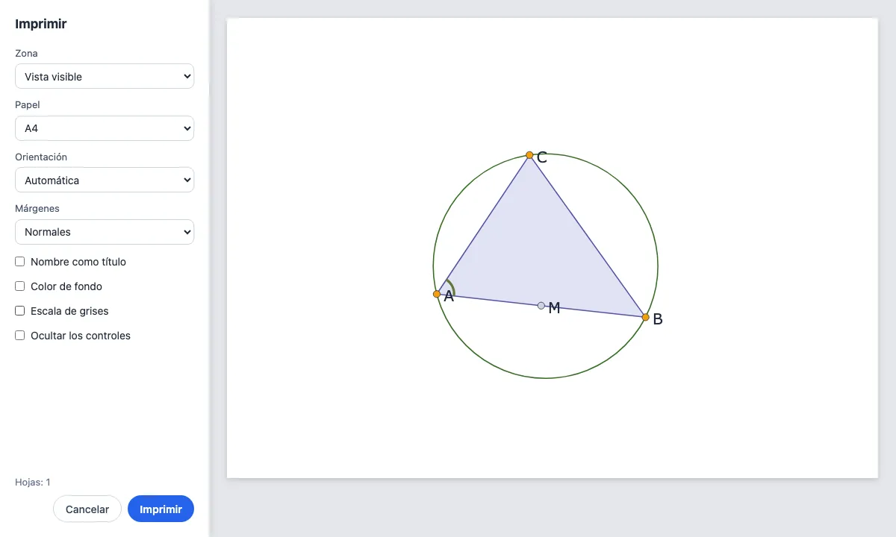
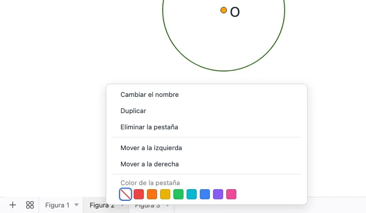

Abrir y guardar
Abrir
Abrir carga un archivo:
| Extensión | Origen |
|---|---|
.dgo |
DocGeo, formato nativo |
.dgp |
DGPad, importado |
.ggb |
GeoGebra, importado |
También se puede arrastrar el icono del archivo a la página, tanto en el editor como en el lector.
La figura abierta sustituye a la figura actual y vacía el historial de deshacer.
Una figura en línea también se abre mediante un enlace (ver Compartir una figura mediante un enlace).
El menú Archivo ofrece también Abrir… (Ctrl O) y Nueva figura, que parte de una figura vacía.
Documentos recientes
Archivo › Abrir un documento reciente muestra las diez últimas figuras abiertas o guardadas, la más reciente primero: en Chrome y Edge, los archivos del ordenador; en todos los navegadores, las figuras abiertas mediante un enlace. El navegador puede volver a pedir permiso para leer el archivo. Un archivo movido, renombrado o eliminado desde entonces se señala y se quita de la lista. Borrar la lista la vacía.
Importación incompleta
Un elemento de DGPad o GeoGebra no compatible se ignora junto con sus dependientes; la indicación da la lista («No importado: …»). El detalle está en Importación de DGPad y GeoGebra.
Guardar
, Archivo › Guardar o
Ctrl S guarda la figura en
.dgo. La vista (zoom, orientación 3D, sistema de
coordenadas) se guarda.
En Chrome y Edge, DocGeo guarda como una aplicación: la primera
vez pregunta dónde guardar el archivo, las siguientes lo
reemplazan sin preguntar. Una figura .dgo abierta
con o soltada en la página se vuelve a
guardar en su archivo; el navegador pide una vez permiso para
modificarlo. Una figura DGPad o GeoGebra nunca se sobrescribe:
su primer guardado crea un archivo .dgo.
Guardar como… (Ctrl Mayús
S) elige otro archivo.
El nombre del archivo aparece al final de la barra de menús; un punto rojo señala cambios sin guardar. Desaparece al guardar, o al deshacer hasta el estado guardado. Mover o ampliar la vista no cuenta como un cambio.
En otros navegadores (Firefox, Safari), o cuando DocGeo está
integrado en otra página, guardar descarga la figura con el
nombre de la figura abierta (figure.dgo para una
figura nueva).
.dgo es el único formato de guardado: abrir una
figura de DGPad o GeoGebra y guardarla la convierte.
Recuperar una figura no guardada
Mientras una figura tiene cambios sin guardar, DocGeo guarda una copia en el navegador. Si el editor se cierra sin que se haya guardado (ventana cerrada por error, fallo), aparece, con su fecha, bajo Figuras no guardadas al principio de Archivo › Abrir un documento reciente: al elegirla, vuelve, todavía marcada como no guardada. Estas copias se conservan catorce días, diez como máximo; Borrar la lista también las borra.
Esta copia se queda en el navegador de este ordenador: no sustituye al guardado. No se guarda nada cuando DocGeo está insertado en otra página.
Imprimir
Archivo › Imprimir… (Ctrl P) muestra la vista previa de las hojas junto a sus ajustes. Imprimir abre luego la impresión del navegador, que también permite guardar en PDF.

La figura llena la hoja hasta los márgenes: rectas y curvas llegan hasta el borde. Al principio nunca se amplía: trazos y etiquetas conservan su tamaño en pantalla.
- Arrastrar sobre una hoja desplaza la figura; la rueda del ratón la amplía o la reduce. La vista del editor no cambia.
- Zona: Vista visible centra la hoja en lo que muestra la pantalla, sin la parte oculta por la paleta de herramientas o las propiedades; Solo la figura la centra en los objetos dibujados.
- Papel, Orientación (Automática: según la zona) y Márgenes. Cambiar estos ajustes, la zona o el título reencuadra las hojas.
- Nombre como título escribe el nombre de la figura, o de la página, arriba de la hoja; Color de fondo imprime el fondo de la figura; Escala de grises quita los colores; Ocultar los controles quita deslizadores, casillas, campos, listas y botones.
- En un libro, Todas las pestañas imprime una hoja por pestaña.
Esc o Cancelar cierra la vista previa. Los ajustes se conservan hasta que se cierra el editor.
Libros: varias pestañas
Un libro reúne varias figuras, cada una en su pestaña, en un
solo archivo .dgo. Las pestañas, debajo de la
figura, muestran una a la vez.

- Archivo › Nueva pestaña añade una pestaña vacía después de las demás, llamada «Figura 2», «Figura 3»…: la figura actual pasa a ser «Figura 1». Después, el botón + al principio de las pestañas hace lo mismo, y el botón de al lado lista todas las pestañas.
- Archivo › Nueva pestaña de hoja de cálculo añade una pestaña que solo contiene una hoja, llamada «Hoja de cálculo 1», «Hoja de cálculo 2»… (la hoja de cálculo).
- Archivo › Abrir en una pestaña nueva… añade figuras guardadas, cada una en una pestaña con su nombre (un libro aporta todas sus pestañas). Archivo › Guardar la pestaña como… guarda sola la figura de la pestaña mostrada.
- Un clic derecho en una pestaña, o en su flecha ▾, abre su menú: Cambiar el nombre, Duplicar, Eliminar la pestaña, Mover a la izquierda o Mover a la derecha, y el Color de la pestaña.
- Un doble clic en una pestaña cambia su nombre (Intro valida, Esc cancela); dos pestañas no pueden tener el mismo nombre. Una pestaña arrastrada cambia de lugar.
- Las pestañas son independientes: cada una tiene sus objetos, sus ejes, sus macros y su historial para deshacer, que se recupera al volver a ella. Sin embargo, una fórmula puede leer un valor de otra pestaña (Leer otra pestaña). Las globales de los programas, en cambio, son comunes a todo el libro (Bloques y tortuga).
- Guardar escribe todo el libro, cada pestaña tal como se dejó; la pestaña mostrada es la que se abrirá. Un libro reducido a una pestaña vuelve a ser una figura simple.
El lector también muestra las pestañas. Una figura integrada en una página web solo muestra la pestaña que se mostraba al guardar.
Compartir una figura mediante un enlace
Una figura subida a internet se abre mediante un enlace: la
dirección del editor, seguida de ?url= y del enlace
del archivo, pegado tal cual.
https://doctools.org/apps/docgeo/editor.html?url=https://www.dropbox.com/scl/fi/…/thales.dgo?rlkey=…&dl=0El enlace del archivo puede venir de:
| Servicio | Enlace que copiar |
|---|---|
| Google Drive | enlace para compartir, acceso «Cualquier persona que tenga el enlace» |
| Dropbox | enlace para compartir |
| OneDrive |
enlace para compartir de una cuenta personal
(https://1drv.ms/u/c/…)
|
| Nextcloud | enlace público para compartir, sin contraseña |
| Sitio web |
dirección del archivo (.dgo,
.dgp o .ggb)
|
El formato se reconoce por el contenido del archivo, y su nombre
aparece al final de la barra de menús. El archivo en línea nunca
se modifica: al guardar se crea un archivo .dgo en
el ordenador.
?url= va al final de la dirección: todo lo que
sigue forma parte del enlace
(editor.html?lang=en&url=…).
Insertar una figura en una página web
Una figura publicada en línea también puede mostrarse, manipulable, en una página web: ver Insertar en una página web.
Idioma
DocGeo toma el idioma del navegador; ?lang= lo
impone (ar, de, el,
en, es, fr,
hi, it, nl,
pt, zh, zh-TW). El idioma
fija también el nombre de los comandos (PuntoMedio,
Mittelpunkt…); los nombres ingleses se
entienden en todos los idiomas.